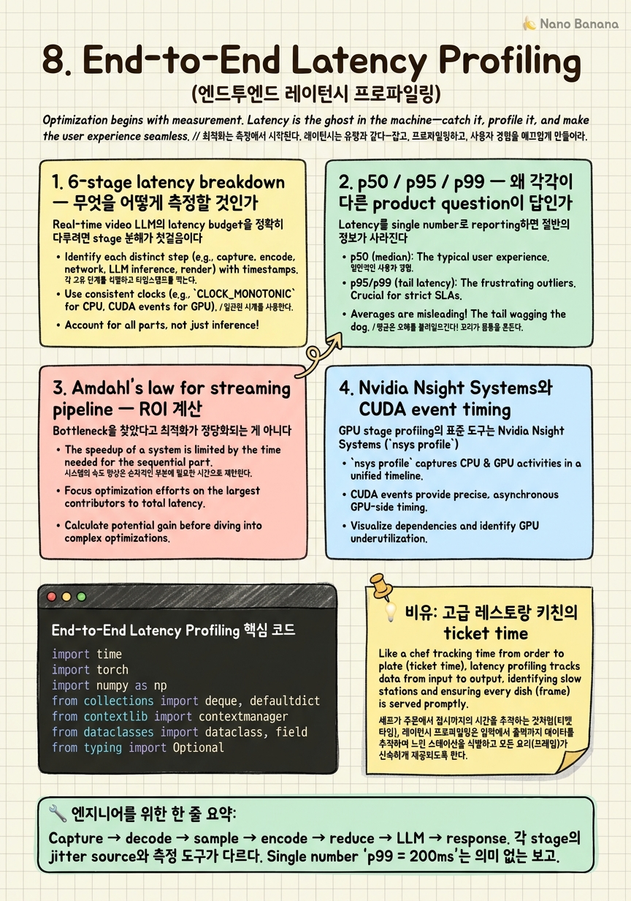

End-to-End Latency Profiling

🎯 학습 목표
- Real-time video LLM의 6-stage pipeline을 모두 나열하고 각 stage의 latency 특성(jitter, tail)을 분류할 수 있다
- p50/p95/p99의 statistical 차이와 SLA로 어느 percentile을 잡을지 product 요구에서 역산할 수 있다
- Amdahl's law를 streaming pipeline에 적용해 bottleneck stage를 찾고 최적화 ROI를 정량화할 수 있다
- Nvidia Nsight Systems로 GPU stage를 trace하고 async tracing으로 CPU/network stage를 join할 수 있다
- Production latency budget 예시(33ms / 100ms / 500ms)를 stage별로 분해해 sketch할 수 있다
Chapter 1-7까지가 'real-time video LLM의 각 stage가 무엇이고 어떻게 최적화하는가'였다면, 이 챕터는 system 관점으로 한 발 빠진다. 실시간 시스템에서 latency는 single number가 아니다. p50과 p99는 다른 quantity이고, 둘 사이의 차이가 systemic jitter의 측정이다. 그리고 6-stage pipeline에서 어느 stage가 bottleneck인지 모르면 어떤 최적화도 ROI를 정당화할 수 없다.
핵심 멘탈 모델 시프트: General video LLM은 'accuracy'가 1급 metric이었다. Hour-scale은 'memory efficiency'를 같이 봤다. Real-time은 latency distribution이 1급 metric이다. 단일 평균이 아니라 분포 전체. 그리고 latency distribution을 다루려면 (a) stage별로 분해, (b) 각 stage의 jitter source 식별, (c) tail (p99)를 별도로 추적, (d) Amdahl's law로 ROI 계산 — 이 4가지를 마스터해야 한다.
이 챕터는 Nvidia Nsight Systems, CUDA event timing, py-spy, OpenTelemetry, Phoenix 같은 tooling을 함께 다룬다. Production 시스템(Gemini Live, GPT-4o Realtime, Twelve Labs Marengo)의 실측 latency를 references로 사용한다.
핵심 내용
1. 6-stage latency breakdown — 무엇을 어떻게 측정할 것인가
Real-time video LLM의 latency budget을 정확히 다루려면 stage 분해가 첫걸음이다. 6-stage breakdown은 다음과 같다.
| Stage | 무엇 | 일반적 latency (30 FPS budget) |
|---|---|---|
| 1. Capture | 카메라/네트워크에서 raw frame 수신 | 1-5 ms (camera) / 10-50 ms (network) |
| 2. Decode | H.264/H.265/AV1 → RGB tensor | 1-3 ms (NVDEC) / 5-15 ms (CPU) |
| 3. Sample | adaptive frame sampling 결정 | 0.1-1 ms |
| 4. Encode | SigLIP/CLIP visual encoding | 5-20 ms (per frame) |
| 5. Reduce | token compression (STAR, TokenMerge) | 1-5 ms |
| 6. LLM | prefill + (sparse) decode | 5-50 ms |
| (7. Response) | text-to-speech, network return | 10-100 ms |
각 stage의 jitter 특성이 다르다. Capture는 network 환경에 따라 p99가 폭발 (RTP packet loss, retransmit). Decode는 keyframe 주기에 따라 spike (B-frame일 때 backward decode 필요). Encode는 batch가 부분 사용될 때 jitter. LLM은 prefix-cache miss 시 spike.
측정 도구. Stage별로 적절한 도구가 다르다. (1) Capture/Decode: CPU/OS 영역 → OpenTelemetry span, kernel trace. (2) Encode/Reduce/LLM: GPU 영역 → CUDA event (torch.cuda.Event(enable_timing=True)). Wall-clock(time.perf_counter())으로 GPU stage를 재면 async launch 때문에 0에 가깝게 나온다 — 반드시 CUDA event + synchronize. (3) Cross-stage: distributed tracing (OpenTelemetry, Arize Phoenix). 같은 frame_id로 모든 span을 join.
시니어 관점: 'p99 latency가 200ms이다'라는 답은 의미 없다. '6 stage 중 capture가 p99=80ms, encode가 p99=40ms, LLM이 p99=60ms로 sum이 180ms'가 답이다. 후자가 있어야 어디를 최적화할지 정해진다.
2. p50 / p95 / p99 — 왜 각각이 다른 product question이 답인가
Latency를 single number로 reporting하면 절반의 정보가 사라진다. 분포의 어느 점을 보느냐가 product question을 결정한다.
p50 (median): 'typical user의 경험'. UX 설계의 baseline. Capacity planning에서 average load 계산에 사용. 그러나 p50만 보면 'minority가 끔찍한 경험을 한다'를 못 본다.
p95: '20명 중 1명이 겪는 worst case'. Multi-tenant 시스템에서 fairness 관점. SLA contract의 typical 기준선. 'p95 < 100ms' 같은 명세가 가장 흔하다.
p99: '100명 중 1명이 겪는 tail'. Tail-latency-sensitive 시스템(거래, 게임, 인터랙티브 응답)의 핵심. Streaming video LLM에서 p99이 결정적인 이유: stream이 지속적이라 한 user가 1시간 안에 p99 spike를 36번 (1초당 1번, p99 = 1%) 겪는다. p99=200ms가 평균적으로 좋아 보여도 user 입장에서는 'frame이 자주 끊긴다'.
p99.9, p99.99: 극단 tail. 페이먼트, 통신 인프라 수준에서나 의미. Streaming video LLM 시작 단계에서는 over-engineering.
Product 질문에서 SLA 역산:
- '평상시 자연스러운 응답 느낌' → p50 < 100ms
- 'frame drop 안 일어나야 함' → p95 < frame budget (33ms @ 30 FPS)
- 'tail spike 없이 안정' → p99 < 2 × frame budget
- '인터랙티브 대화 응답' → p50 < 500ms, p95 < 1s
SLA 설정의 정치학: 'p99 < 33ms' 같은 aggressive SLA는 비용이 제곱으로 증가한다. p95에서 p99로 옮기는 데 GPU 2-3배 필요한 경우가 많다. Product에서 '진짜 어디 percentile이 product 가치를 결정하는가'를 명시 안 하면 무한한 비용을 쓰게 된다.
3. Amdahl's law for streaming pipeline — ROI 계산
Bottleneck을 찾았다고 최적화가 정당화되는 게 아니다. Amdahl's law를 streaming pipeline 버전으로 적용해야 한다. 총 latency가 L이고 한 stage가 f × L을 차지하면, 그 stage를 s배 빠르게 했을 때 전체 speedup은:
speedup = 1 / ((1 - f) + f/s)
실전 예. 총 latency 100ms, encoder가 40ms(f=0.4). Encoder를 4배 빠르게 했을 때:
speedup = 1 / (0.6 + 0.4/4) = 1 / 0.7 ≈ 1.43x
즉 encoder를 75% 줄여도 전체는 30% 단축. 만약 LLM이 50ms로 가장 크면 encoder 4배 최적화는 ROI가 그보다 낮다.
Streaming pipeline의 변종: stage들이 parallel하게 돌면 max가 latency다. Pipeline staging이 되어 있다면:
frame N capture → decode → encode → ... → response
frame N+1 capture → decode → encode → ...
각 stage가 별도 worker라면 throughput latency = max(stage latency)이고 critical path latency = sum이다. 'Frame이 33ms마다 들어가는데 처리는 100ms 걸린다'면 throughput은 OK(max stage가 33ms 이하면)지만 critical path(같은 frame의 처리 끝까지)는 100ms.
시니어 결정 포인트: 어느 stage를 parallelize하고 어느 stage를 sequential로 둘 것인가. Capture-decode-encode는 frame-independent라 parallel. Encode-reduce-LLM은 같은 frame에서 sequential이지만 다른 frame 사이는 parallel. 이 분리가 Chapter 9의 producer-consumer 아키텍처로 이어진다.
ROI 계산을 빠뜨리고 'encoder를 빠르게 하자'에 6개월 쓰는 게 가장 흔한 실수다. Latency profile을 보지 않고 시작한 optimization은 거의 항상 잘못된 stage를 친다.
4. Nvidia Nsight Systems와 CUDA event timing
GPU stage profiling의 표준 도구는 Nvidia Nsight Systems (nsys profile)다. CUDA stream 단위로 모든 kernel launch, memcpy, sync을 timeline으로 시각화. Real-time video LLM에서 Nsight으로 봐야 할 것 세 가지.
(a) Kernel launch latency. Python에서 GPU op을 호출하면 host→device launch에 ~5-10 µs overhead. 30 FPS pipeline에서 한 frame당 op 100개 launch하면 0.5-1ms가 launch만으로 쓰인다. Nsight으로 launch 사이 gap을 보면 'CUDA graph capture'로 fix할 후보가 보인다.
(b) Stream concurrency. 다른 frame의 encode가 동시에 도는지(stream parallel) 직렬로 도는지(stream serial). PyTorch의 default stream만 쓰면 직렬이다. torch.cuda.Stream() 명시적으로 사용하면 parallel하지만 dependency 관리가 늘어난다. Nsight timeline에서 stream lane을 보면 즉시 진단.
(c) Memcpy 비용. Host↔device 또는 device↔device. 8K×4K RGB frame은 ~100MB로 PCIe 4.0 16GB/s에서 6ms. NVDEC에서 직접 GPU memory로 decode하면 이 cost 없음. Nsight으로 NVDEC와 PyTorch tensor 사이 'cudaMemcpy'가 보이면 zero-copy 경로로 옮길 후보.
CUDA event timing 패턴:
start = torch.cuda.Event(enable_timing=True)
end = torch.cuda.Event(enable_timing=True)
start.record()
out = encoder(frame)
end.record()
torch.cuda.synchronize()
ms = start.elapsed_time(end) # in milliseconds
Wall-clock(time.perf_counter())으로 재면 GPU op은 launch만 측정돼서 0에 가깝다. 항상 CUDA event를 쓰되, async pipeline에서 synchronize() 호출 자체가 latency를 늘릴 수 있다 — 측정 코드를 production hot path에 두면 안 된다. Sampling profiler처럼 1% trace만 켜는 게 표준.
5. Production latency budget 예시 — 33ms / 100ms / 500ms 운영
Production system들의 latency target을 references로 보자. (정확한 숫자는 비공개이므로 추정과 측정 보고에 기반.)
Gemini Live (Google). 모바일 디바이스에서 실시간 video chat. Reported median response latency ~500ms (Google I/O 2024). 즉 user 질문 후 응답까지 500ms target. Frame ingestion은 별도로 30 FPS = 33ms budget으로 추정. Response generation은 sparse trigger.
GPT-4o Realtime API (OpenAI). Voice-to-voice ~232ms (OpenAI blog). Video까지 합쳐도 보통 < 500ms target. Token streaming으로 first-token latency를 줄이는 데 집중.
Twelve Labs Marengo / Pegasus. 비디오 indexing/search 서비스. Real-time이라기보다 quasi-real-time (수초 lag 허용). 그러나 streaming ingestion으로 영상이 들어오는 동안 embedding을 만든다. 1 FPS sampling으로 운영하는 것으로 평가됨.
실전 budget 분해 예시. 30 FPS = 33ms total budget으로 vision streaming LLM:
| Stage | Target ms | Note |
|---|---|---|
| Capture | 3 | NVDEC + zero-copy |
| Decode | 2 | HW decoder |
| Sample (Chapter 3) | 0.5 | adaptive 결정 |
| Encode (Chapter 5) | 8 | SigLIP small + batch 4 |
| Reduce (Chapter 6) | 2 | online TokenMerge |
| LLM prefill | 15 | 256 token incremental |
| Buffer/queue | 2.5 | safety margin |
| Total | 33 | p95 budget |
p99에서 +30% 여유 두면 ~45ms. SLA를 'p99 < frame budget'으로 잡으면 위 budget을 더 줄여야 한다. 일반적으로 30 FPS는 너무 빡빡해서 production은 10-15 FPS로 운영하고 user에게 '실시간'으로 보이게 한다. Gemini Live가 그렇게 평가됨.
500ms response budget도 분해:
| Stage | Target ms |
|---|---|
| Frame ingestion (latest few seconds) | 0 (이미 처리됨) |
| Decode trigger probe | 5 |
| LLM decode (50 token @ specdec 5ms/tok) | 250 |
| TTS first audio | 100 |
| Network return | 50 |
| Margin | 95 |
| Total | 500 |
Decode가 250ms로 dominant. Speculative decoding이 1.5-2x 가속하면 budget이 100ms 풀린다. 이게 Chapter 7의 speculative decoding 결정이 product 수준에서 매우 가치 있는 이유다.
시니어 관점: budget 분해를 안 한 채 'p99 < X를 맞춰라'라고 들으면 일을 못 시작한다. 분해표를 만드는 것 자체가 첫 deliverable이고, 분해표가 production communication의 공용 언어가 된다.
💡 비유로 이해하기
미슐랭 키친에서 서비스 시간 동안 일어나는 일을 떠올려보자. 손님이 주문하면 (1) 서버가 ticket 작성(capture), (2) ticket 프린터가 출력(decode), (3) 헤드 셰프가 어느 station에 보낼지 결정(sample), (4) 각 station에서 조리(encode), (5) 패스에서 plate up(reduce), (6) 서버가 손님 테이블로 운반(LLM), (7) 손님 입에 들어감(response). 각 단계가 '한 ticket의 latency'를 만든다.
키친 매니저가 보는 metric은 'ticket time'이다. 평균이 8분이라고 만족하지 않는다. 95th percentile이 12분이고 99th가 20분이면 'tonight 손님 100명 중 1명은 20분 기다린다'는 뜻이다. 그 손님은 다시 안 온다. 그래서 모든 키친에 'ticket time histogram'이 KPI로 걸려 있다.
그리고 키친의 bottleneck은 한 station에 있다. Grill이 만약 station 중 가장 느리면 다른 station이 아무리 빨라도 ticket time이 grill에 묶인다(Amdahl's law). 매니저는 grill에 sous chef 한 명을 더 붙이거나 그릴을 두 대로 만들거나 grill을 거치지 않는 메뉴 비율을 늘리는 결정을 해야 한다. Garde manger(샐러드 station)에 인력을 더 쓰는 건 ticket time을 못 줄인다.
Streaming video LLM은 정확히 이 키친이다. 6-stage는 station이고, ticket time histogram이 latency distribution이며, p99은 worst customer 100명 중 1명의 경험이다. Amdahl's law는 키친 매니저의 자원 배분 직관이다. Nsight Systems는 키친 안에 CCTV를 설치해서 어느 station에서 ticket이 멈춰 있는지 보는 것이다. 그리고 budget 분해표는 키친 매니저가 매일 아침 회의에서 보는 SLA 운영표다. 이 비유 그대로 production system을 운영하면 거의 다 맞다.
💻 코드 예시
6-stage latency profiler. 각 stage에 같은 frame_id로 span을 찍고, CUDA event로 GPU stage를 정확히 측정. OpenTelemetry 호환 trace를 만들고 stage별 p50/p95/p99 histogram을 유지.
import time
import torch
import numpy as np
from collections import deque, defaultdict
from contextlib import contextmanager
from dataclasses import dataclass, field
from typing import Optional
@dataclass
class StageProfile:
samples: deque = field(default_factory=lambda: deque(maxlen=10000))
def add(self, ms: float):
self.samples.append(ms)
def percentiles(self) -> dict:
if not self.samples:
return {"p50": 0, "p95": 0, "p99": 0}
arr = np.fromiter(self.samples, dtype=np.float64)
return {
"p50": float(np.percentile(arr, 50)),
"p95": float(np.percentile(arr, 95)),
"p99": float(np.percentile(arr, 99)),
}
class PipelineProfiler:
STAGES = ["capture", "decode", "sample", "encode",
"reduce", "llm_prefill", "llm_decode", "response"]
def __init__(self, sample_rate: float = 0.01):
self.profiles = {s: StageProfile() for s in self.STAGES}
self.sample_rate = sample_rate # only profile 1% of frames
@contextmanager
def stage_cpu(self, name: str, frame_id: int):
# CPU/host-side stage timing.
if not self._should_sample(frame_id):
yield; return
t0 = time.perf_counter()
yield
dt = (time.perf_counter() - t0) * 1000.0
self.profiles[name].add(dt)
@contextmanager
def stage_gpu(self, name: str, frame_id: int):
# GPU stage timing via CUDA events (wall-clock would lie).
if not self._should_sample(frame_id):
yield; return
start = torch.cuda.Event(enable_timing=True)
end = torch.cuda.Event(enable_timing=True)
start.record()
yield
end.record()
end.synchronize()
self.profiles[name].add(start.elapsed_time(end))
def _should_sample(self, frame_id: int) -> bool:
return (frame_id * 2654435761 & 0xFFFFFFFF) / 2**32 < self.sample_rate
def report(self) -> dict:
return {s: self.profiles[s].percentiles() for s in self.STAGES}
def critical_path_p99(self) -> float:
return sum(self.profiles[s].percentiles()["p99"] for s in self.STAGES)
def amdahl_speedup(self, stage: str, factor: float) -> float:
total = sum(self.profiles[s].percentiles()["p99"] for s in self.STAGES)
stage_t = self.profiles[stage].percentiles()["p99"]
f = stage_t / total if total > 0 else 0
return 1.0 / ((1 - f) + f / factor)네 가지 production-grade 결정이 코드에 담겨 있다. (1) stage_cpu vs stage_gpu 분리: CPU stage는 time.perf_counter()로, GPU stage는 torch.cuda.Event로. 같은 코드로 GPU를 wall-clock으로 재면 async launch 때문에 0이 나온다. 시니어가 자주 빠뜨리는 함정. (2) sample_rate=0.01: 매 frame 측정하면 측정 자체가 latency budget을 침범. 1% sampling으로 충분한 percentile estimation. Hash-based(frame_id * 2654435761)로 deterministic — 같은 frame_id면 항상 같은 결정이라 replay에서 reproducible. (3) report()로 stage별 p50/p95/p99 dictionary 반환 — Prometheus / Datadog / OpenTelemetry에 그대로 export 가능. (4) amdahl_speedup: 'stage X를 factor배 빠르게 했을 때 전체 speedup' 직접 계산. 'Encoder를 4배 빠르게 하는 PR이 의미 있나'에 즉답 가능. 이 한 줄 함수가 6개월 잘못된 최적화를 막는다.
🏭 현업에서의 평가
✅ 시니어가 보는 것
- 6-stage breakdown을 외워서가 아니라 *역할 분리* 단위로 정의 (frame-indep vs frame-dep 등)
- p50/p95/p99을 'tighter SLA는 비용 제곱 증가'로 product와 협상할 수 있는 사고
- Amdahl's law 계산을 코드 없이 즉석에서 하는 직관
- Nsight, CUDA event, py-spy, OpenTelemetry 4개 도구의 적용 영역을 정확히 분리
- Sampling-based profiling을 production에 적용하는 1% rate 같은 운영 결정
⚠️ 레드 플래그
- Latency를 single number(평균 또는 p50)로 reporting
- 최적화 PR을 ROI 계산 없이 merge
- GPU stage를 wall-clock으로 measuring해 'fast하다'고 결론
- Stage 간 dependency를 무시하고 throughput과 critical path를 혼동
- 'p99 < frame budget'을 product 협의 없이 commit해 무한 비용 약속
🎤 예상 인터뷰 질문
- **Q1. SLA 분해.** Product가 'p95 < 100ms로 real-time video chat을 만들어달라'고 요청했다. 6-stage budget을 즉석에서 분해하라. 각 stage의 target ms와 그 합이 100ms에 들어가는지, p99에서 어떻게 행동할지를 표로 제시.
- **Q2. Amdahl ROI.** 총 latency p99 = 120ms, encoder 50ms / LLM 40ms / 기타 30ms. 다음 PR 중 어느 것을 priority로 머지하고 왜인가? (a) encoder를 3배 빠르게 (b) LLM에 speculative decoding (1.5x) (c) reduce stage 0.5ms 줄이기. Amdahl 계산을 보여라.
- **Q3. CUDA event 함정.** 'encoder latency가 0.1ms로 나왔다'는 PR 메시지를 보고 어떤 질문을 reviewer로서 던질 것인가? 측정 코드에 있을 수 있는 두 함정을 짚어라.
✨ 핵심 요약
Latency는 6-stage로 분해해서 봐야 한다
Capture → decode → sample → encode → reduce → LLM → response. 각 stage의 jitter source와 측정 도구가 다르다. Single number 'p99 = 200ms'는 의미 없는 보고.
p50 / p95 / p99은 다른 product question에 답한다
p50은 typical UX, p95는 SLA 협상, p99은 streaming 환경에서 user-time exposure (1시간 = 36번 spike). SLA percentile을 product와 명시적으로 협상해야 한다.
Amdahl's law가 최적화 PR의 게이트키퍼다
speedup = 1 / ((1-f) + f/s). Bottleneck이 아닌 stage 최적화는 ROI 0. PR 머지 전에 분해표로 정량화해야 6개월 헛수고를 막는다.
GPU stage는 반드시 CUDA event로 측정
Wall-clock은 async launch 때문에 0에 가깝게 나옴. `torch.cuda.Event(enable_timing=True)` + synchronize. 시니어가 자주 빠뜨리는 함정.
Sampling-based profiling이 production 표준
매 frame 측정은 budget을 침범. 1% rate hash-based deterministic sampling으로 replay reproducibility까지 확보.
Production 시스템의 latency target은 ~500ms 대화 응답
Gemini Live ~500ms, GPT-4o Realtime ~232ms voice-to-voice. Frame ingestion 33ms와 response generation 500ms는 다른 budget으로 분리.
30 FPS는 너무 빡빡하다, production은 10-15 FPS
33ms total budget에 6-stage 분해를 다 채워 넣기 어려움. 'user에게 실시간으로 보이는 최소 FPS'(10-15)로 운영하고 인지적 fluency만 확보.
Budget 분해표가 production communication의 공용 언어
Stage별 target과 measured값을 같이 보여주는 표가 매주 리뷰의 anchor. SLA 협상, optimization priority, 인력 배분 모두 분해표 위에서 결정.